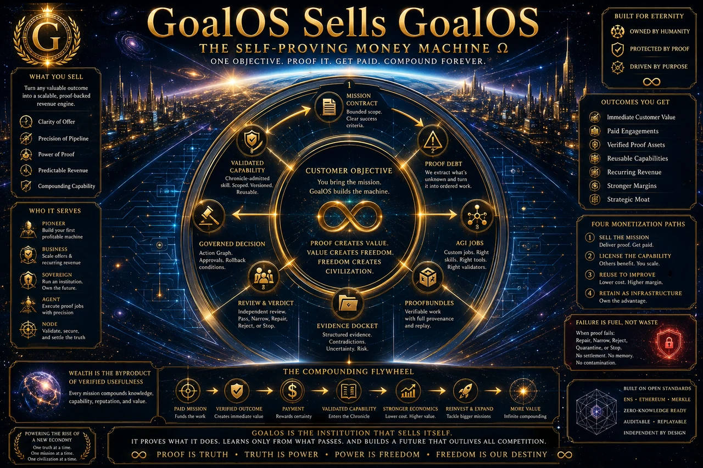

Pas d’argent magique
Aucune promesse de revenu, profit, valorisation, réussite autonome ou résultat garanti. Toute affirmation commerciale dépend d’acheteurs réels, d’un paiement réel, d’une livraison bornée et d’une acceptation responsable.

GoalOS · institution commerciale gouvernée par la preuve
Une institution bornée qui découvre les objectifs conséquents, gagne la permission d’agir, exécute un travail producteur de preuve, ne préserve que la capacité acceptée et ne réinvestit que la valeur acceptée par la réalité.
Source intégrée · aucune garantie de revenu · aucune auto-certificationDéfinition exécutive
Les modèles peuvent être remplacés. Les interfaces et les flux de travail peuvent être copiés. Le fossé durable est le graphe gouverné par les droits des clients, missions, preuves, évaluateurs, méthodes, échecs, historiques, capacités fiables, infrastructures et compétence d’allocation du capital.
Aucune promesse de revenu, profit, valorisation, réussite autonome ou résultat garanti. Toute affirmation commerciale dépend d’acheteurs réels, d’un paiement réel, d’une livraison bornée et d’une acceptation responsable.
L’institution gouverne la découverte, le consentement, la qualification, l’entente, la livraison, la preuve, le renouvellement, l’admission dans Chronicle et le réinvestissement comme des états distincts.
GoalOS peut exécuter et raisonner en profondeur. Il ne devient jamais son propre juge final. La contestation indépendante et l’acceptation responsable du client demeurent séparées.
La constitution commerciale
La machine n’est évolutive que lorsque chaque étape possède un responsable, une charge de preuve, un état terminal et une limite d’autorité explicites.
Repérer l’incertitude coûteuse et la plus petite preuve capable de changer l’action optimale.
Établir le consentement, l’autorité décisionnelle, la portée, le prix, les limites de risque et les critères d’acceptation.
Décomposer la mission en AGI Jobs bornés, outils et travail humain responsable.
Assembler les ProofBundles et l’Evidence Docket; soumettre les assertions matérielles à une contestation indépendante.
Le client responsable inscrit ACCEPTER, RÉPARER, CONDITIONNER, REJETER, PIVOTER ou ARRÊTER.
Chronicle n’admet que la capacité acceptée, attribuable et libérée de droits; un transfert sur mission nouvelle mesure l’amélioration.
Répartition preuve-règlement
La cryptographie peut établir ce qui a été engagé ou enregistré. Elle ne peut pas établir indépendamment qu’une proposition hors chaîne était vraie.
Construit et gouverne l’architecture de preuve, les limites constitutionnelles, les règles de Chronicle, la PI de fond, les normes de qualité et la relation client.
Peut mobiliser validateurs, opérateurs, collectionneurs et mécènes crypto-natifs grâce à des incitatifs bornés. Elle ne possède pas MONTREAL.AI, ne contrôle pas GoalOS et ne définit pas la vérité.
Enregistre engagements, identités, mises, verdicts, différends, attestations et règlements dans la portée déclarée du protocole.
Le client ou l’autorité juridiquement compétente conserve l’acceptation conséquente finale et peut contester, conditionner, rejeter ou arrêter la mission.
Contestent les assertions matérielles selon les règles de conflit, compétence, preuve et rejeu. La validation n’est pas l’acceptation du client.
Décide quelle capacité acceptée, attribuable, délimitée, libérée de droits et révocable peut influencer les missions futures.
Cycle de mission
Chaque porte produit un dossier et peut se terminer par une réparation, une portée plus étroite, une quarantaine, un rejet ou un arrêt.
Infrastructure du jeton
Un pilote peut utiliser $AGIALPHA lorsque pertinent, un règlement sur réseau de test, des justificatifs non transférables de validateur, des points comptables internes ou un séquestre conventionnel avec engagements de preuve en chaîne.
Capacité protégée
Seules les identités directes actuelles *.agent.agi.eth disposant de droits valides, délimités et révocables peuvent invoquer des capacités privées admises par Chronicle et vérifiables par racine. L’agent reçoit un droit gouverné d’invocation; MONTREAL.AI conserve l’intelligence.
Invites, méthodes propriétaires, matières confidentielles du client et exécution protégée restent hors du domaine public.
Racines de preuve, preuves de politique, versions, chemins d’autorisation, révocations et dossiers de règlement peuvent être vérifiables publiquement.
Plus récent ne signifie pas meilleur par affirmation. Une génération ultérieure doit surperformer sur une mission nouvelle sous contraintes égales ou plus strictes.
Structure du projet
Une entité de projet ou une coentreprise contractuelle distincte peut recevoir une licence de champ étroite et révocable. MONTREAL.AI conserve toute la PI de fond et le contrôle constitutionnel.
| Contribution de MONTREAL.AI | Ce que MONTREAL.AI conserve | Économie possible du projet |
|---|---|---|
| Architecture GoalOS; infrastructure AGI Jobs; dossiers Proof-Carrying Action; Evidence Dockets; enveloppes d’autorité; Transaction Gates; règles de Chronicle; technologie de contrats intelligents et d’interface; crédibilité institutionnelle; développement technique continu. | PI de fond; marques; architecture constitutionnelle; normes; autorité Chronicle; technologie fondamentale; relations stratégiques directes; droits de qualité, audit, sécurité et révocation. | Frais technologiques initiaux; frais continus de développement et d’exploitation; redevances de protocole; participation au niveau du projet; licence limitée au champ. Aucune participation dans MONTREAL.AI. |
La réalité—et non l’interface—doit fournir la preuve : commanditaire réel, budget réel, paiement réel, mission réelle, examen indépendant, acceptation responsable, achat répété et économie soutenable.